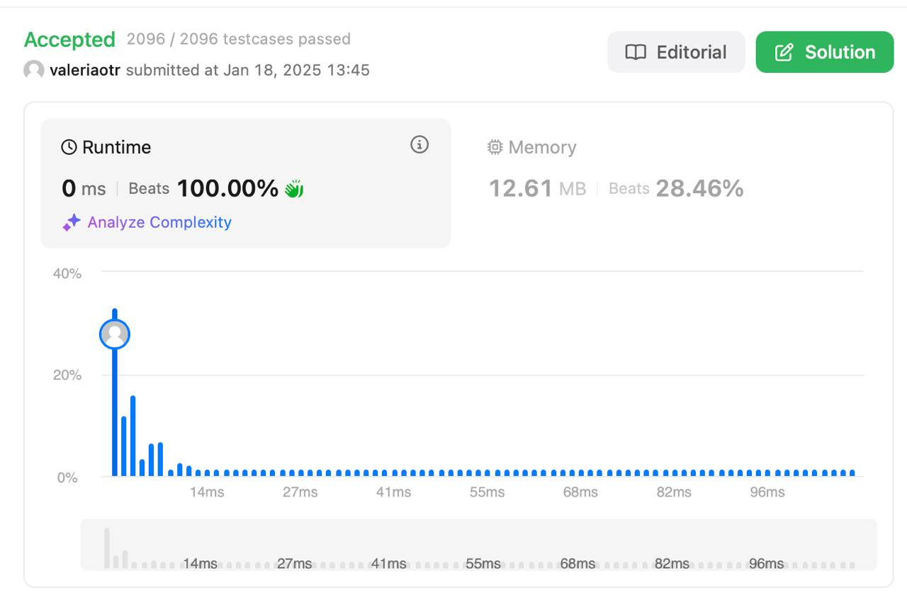

Median of Two Sorted Arrays
Level: Hard
Description
Given two sorted arrays nums1 and nums2 of size m and n respectively, return the median of the two sorted arrays.
The overall run time complexity should be O(log (m+n)).
Example 1:
Input:
nums1 = [1,3], nums2 = [2]
Output:
2.00000
Explanation: Merged array = [1,2,3] and the median is 2.
Example 2:
Input:
nums1 = [1,2], nums2 = [3,4]
Output:
2.50000
Explanation: Merged array = [1,2,3,4] and the median is (2 + 3) / 2 = 2.5.
Constraints:
nums1.length == mnums2.length == n0 <= m <= 10000 <= n <= 10001 <= m + n <= 2000-10^6 <= nums1[i], nums2[i] <= 10^6
Solution
Реализовано решение задачи с использованием бинарного поиска для минимизации сложности до O(log(min(m, n))).
Основные шаги:
- Определение меньшего массива:
-
Выполняем бинарный поиск по меньшему массиву, чтобы уменьшить вычислительные затраты.
-
Разделение массивов:
-
Находим позиции разделения двух массивов (
partitionXиpartitionY), такие что все элементы в левой части объединенного массива меньше или равны элементам в правой части. -
Выбор медианы:
- Если общее количество элементов четное, медиана — это среднее двух центральных элементов (
max(left_part)иmin(right_part)). -
Если нечетное, медиана — это центральный элемент (
max(left_part)). -
Обработка краевых случаев:
- Учитываются пустые массивы или значения за пределами индекса.
Примеры:
-
Пример 1:
Input: nums1 = [1, 3], nums2 = [2] Output: 2.0 Explanation: Медиана объединенного массива [1, 2, 3] равна 2. -
Пример 2:
Input: nums1 = [1, 2], nums2 = [3, 4] Output: 2.5 Explanation: Медиана объединенного массива [1, 2, 3, 4] равна (2 + 3) / 2 = 2.5.
Примечания:
- Бинарный поиск ограничивает количество операций, что делает алгоритм эффективным даже для больших массивов.
Result
